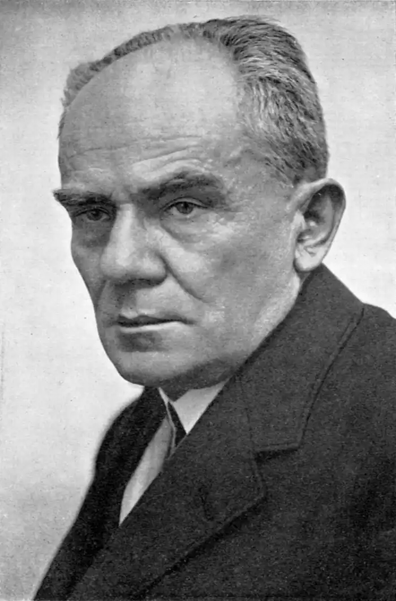
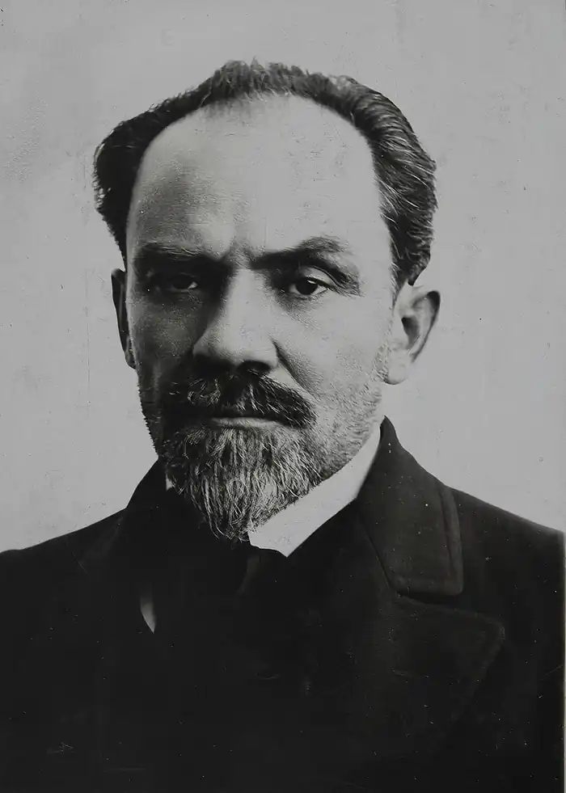
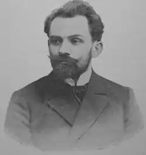

Жеромський Стефан (Zeromski, Stefan — 04.10. 1864, Стравчин — 20.11.1925, Варшава) — польський прозаїк і драматург.Творчість Жеромського загалом спирається на реалістичні традиції, але при цьому у багатьох своїх творах він виходить за їхні межі і вдається до сучасного йому модерного художнього досвіду, який представлений у його прозі вкрапленнями натуралізму, імпресіонізму та неоромантизму. Найбільша заслуга Жеромського полягає в подальшому розвитку польського соціально-психологічного роману. Значним є його внесок і в розвиток історичного роману. Помітне місце в польській літературі межі XIX—XX ст. Жеромський зайняв і як драматург.
Народився письменник у селі Стравчині поблизу повітового містечка Кельці. Його батько — Вінцент Жеромський — був дрібним шляхтичем, котрий не мав власного маєтку і змушений був заробляти на прожиток, орендуючи чужу землю. Невдовзі родина перебралася в інше село — Цекоти, в якому й минули дитячі роки Стефана. Тут він закінчив народну сільську школу, а з 1876 р. продовжив навчання в кельцькій гімназії. У 1879 р. померла мати Жеромського, а через чотири роки — батько. Залишившись без жодної матеріальної підтримки, Жеромський змушений був заробляти на життя репетиторством. У своєму "Щоденнику" він так писав про ці роки: "Я опустився майже на саме дно життя. У мене немає ні копійки за душею і жодних проблисків на майбутнє... Вже більше тижня я не обідав, та якби тільки не обідав: не мав рісочки в роті, крім чаю та хліба" (запис від 9 травня 1887 p.). Постійний голод підірвав і без того слабке здоров'я Жеромського, у котрого була спадкова хвороба легень. З цієї причини він не зміг скласти випускних іспитів і закінчив у 1886 р. гімназію, не отримавши атестата зрілості. Але це не завадило йому вступити у тому самому році у Варшавську Вищу ветеринарну школу. Тут Жеромський брав найактивнішу участь у студентських гуртках, диспутах, маніфестаціях. Його погляди у цей час формувалися під значним впливом ідей позитивізму, проте дуже швидко Жеромський переконався у їхній історичній безперспективності. На деякий час він зблизився з націонал-демократичною партією, яка імпонувала йому своєю патріотичною програмою, потім співчував ідеям соціалістів. Увесь цей час він продовжував цікавитися літературою, уважно стежив за дискусіями, які розгорнулися між реалістами та модерністами.
У 1888 р. Жеромський змушений був залишити Варшавську школу. До цього його спонукали важкі умови життя, постійні хвороби та недоїдання. Три роки, з 1888 по 1891, він переїжджав з місця на місце, шукаючи роботу домашнього вчителя в поміщицьких маєтках. Восени 1889 р. у варшавських журналах були опубліковані три перші оповідання Жеромського: "Ах, якби мені дожити", "Елегія"і "Собачий обов'язок". Упродовж цього і наступного року Ж. написав ще близько десяти оповідань. У 1895 р. ранні оповідання вийшли друком двома збірками у Варшаві і Кракові — "Оповідання" ("Opowmdania") і "Заклюють нас круки" ("Rozdziobiq. nas kruki, wrony"). Характерною ознакою ранніх оповідань Жеромського є те, що, на відміну від своїх сучасників, він не прагне змальовувати широку, панорамну картину села, якому в основному присвячені його перші твори, але натомість соціально-критичний елемент у його творах більш гострий і безкомпромісний. Серед ранніх оповідань Жеромського виокремлюються три основні тематичні групи: у першій розкриваються важкі умови життя польського селянства, в другій — змальовуються характерні образи сільської і міської інтелігенції, в третій — порушується тема національно-визвольної боротьби поляків. Перші збірки оповідань відразу зробили Жеромського популярним. На початку 90-х pp. у Жеромського загострилася хвороба легень і перейшла у туберкульоз. Після лікування у липні 1892 р. письменник поїхав у Швейцарію, в містечко Рапперсвіль, де йому обіцяли місце помічника бібліотекаря в польському музеї. Незадовго до того він одружився, і в Швейцарію поїхав із дружиною — Октавією Родкевич і прийомною донькою. У бібліотеці Жеромський працював 4 роки, з 1892 по 1896. У ці роки Жеромський багато подорожував, відвідував Мілан, Дрезден, Париж, побував в Альпах. У кінці 1896 р. Жеромські повернулися в Польщу і замешкали у Варшаві, де письменник знову отримав місце бібліотекаря, цього разу при бібліотеці Замойських, у якій він пропрацював з 1897 по 1904 pp. У період 1897-1899 pp. Жеромський створив три об'ємні прозові твори. Це повісті "Проміння" ("Promien", 1897) і "Сізіфова праця" ("Syzyfowe prace", 1898), а також роман "Безпритульні" ("Ludzie bezdomni", 1899). Усі три твори об'єднані типом позитивного героя, який намагається протистояти соціальній несправедливості та національним утискам. У повісті "Проміння" головним героєм є сільський лікар Радуський, котрий присвячує своє життя служінню народу, лікує селян і помирає, заразившись від одного з них. Жеромський порівнює свого героя з променем світла, яке розсіює темряву політичної та культурної неосвіченості. Наступна повість "Сізіфова праця "частково має автобіографічний характер. У ній змальоване життя польських юнаків, учнів провінційної гімназії, де панує атмосфера жорстокої русифікаторської політики, національних утисків польської мови та культури. Водночас ця повість пройнята оптимістичним духом — у тому розумінні, що головну увагу автор приділяє в ній зображенню зростання національної самосвідомості в учнівському середовищі. Звідси і її символічна назва. Під сізіфовою — тобто даремною працею автор розуміє русифікаторську політику, яка, на думку автора, лише зміцнює національно-патріотичні почуття в молодих поляків. Найвизначнішим з творів Жеромського, написаних у перший період його творчості (тобто в 90-і роки), є його роман "Бездомні", який вийшов друком у 1899 р. Цей роман відразу висунув Жеромського у ряд провідних польських письменників того часу. Під образом "безпритульних" Жеромський мав на увазі тих правдошукачів-інтелігентів, котрі намагалися полегшити долю польського народу, боролися за соціальну та національну справедливість. У романі "Безпритульні" цей тип правдошукача виведений в образі головного героя, лікаря Томаша Юдима. З 1897 року Жеромський, живучи у Варшаві, включився в активну політичну діяльність. Упродовж 1898 —1900-х років письменник відвідував конспіративні засідання гуртка варшавської інтелігенції, на своїй квартирі зберігав нелегальну літературу, інколи переховував підпільників. У 1899 р. його навіть заарештувала поліція, але за браком доказів його було звільнено. Проте відтоді поліція встановила за ним нагляд. З 1904 року, коли матеріальне становище Жеромського значно покращилось (за рахунок видань його книг), він залишив службу і зайнявся винятково літературною працею. Того ж року переїхав у містечко Наленчов Люблінської губернії, де, з невеликими перервами, жив до 1909 р. У цьому містечку він заснував народну школу, організував курси для неписьменних селян, робітничий недільний університет, виступав з лекціями на науково-популярні теми. На революційні події в Росії та Польщі Жеромський відгукнувся цілою низкою публіцистичних праць, у яких відобразилися його враження від масових страйків та барикадних боїв у Лодзі, а також прозвучала гостра критика на поміщицьку експлуатацію селян ("Сон про шпагу", 1905; "Ноктюрн", 1907; "Слово про наймита", 1908 та ін.) З осені 1906 до весни 1907 pp. Жеромський подорожував. В Італії, куди він привіз на лікування свого сина Адама, письменник познайомився з відомими російськими літераторами — Максимом Горьким та Л. Андреєвим. Поразку революції Жеромський сприйняв болісно. Її характер розчарував письменника. Як наслідок, він розірвав відносини з польською соціалістичною партією, яка, на думку письменника, прагнула не стільки національної незалежності для Польщі, скільки влади над суспільством. Політичний песимізм Ж. позначився і на тих творах, які він створив у цей період. Це, зокрема, один із найкращих його романів — "Історія гріха" ("Dzieje grzechu", 1908), а також "несценічна" драма "Троянда"("Roza", 1909). Політична діяльність Жеромського вкотре привернула увагу поліції. Восени 1908 р. Жеромський, щоб уникнути можливих гонінь, виїхав з Наленчова. Але у Варшаві його заарештували і кілька місяців тримали у в'язниці. Після звільнення, у 1910— 1912 pp., Жеромський мешкав у Парижі, а потім у Кракові та Закопане. З початком Першої світової війни письменник збирався вступити до лав польських легіонів, що воювали на боці Австрії проти Росії, але відмовився через необхідність присягати на вірність австрійському імператору. З 1918 р. Жеромський очолював закопанську міську раду, а наступного року перебрався у Варшаву, займався громадською діяльністю, подорожував по країні. У 1920 р. він брав активну участь в організації 1 з'їзду польських письменників. На цьому з'їзді ухвалили його проект про створення Академії польської літератури, а саму академію назвали його іменем. У цей час Жеромський створив цілий ряд програм, спрямованих на реформацію суспільно-економічного та культурного життя Польщі. Розчарування Жеромського від нової, незалежної Польщі відобразилося у романі "Провесна" ("Przedwiosnie",1925), який став останнім значним і одним з найбільш резонансних творів письменника. Після появи цього роману Жеромського почали піддавати політичному цькуванню, називали деморалізатором польської молоді й агентом Москви. Польський уряд відмовився підтримати кандидатуру письменника на висунення в лауреати Нобелівської премії. Постійні цькування ще більше підірвали і без того слабке здоров'я Жеромського. 20 листопада 1925 р. він помер. Його похорон переріс у величезну політичну маніфестацію, на яку прийшли всі видатні діячі польського суспільства. Перед варшавським замком були вишикувані піхотинці і кавалерія, а над містом кружляли літаки. Уряд посмертно нагородив Жеромського Державною премією. У період 900-х років Жеромський написав свої основні твори. Найвидатнішими з них вважаються три його романи — "Попіл" ("Voy'ioty", 1903), "Історія гріха", "Провесна". У цей період Жеромський працював одночасно і в прозі, і в драматургії. У прозі письменника 900-х років можна виділити два основні тематичні цикли.